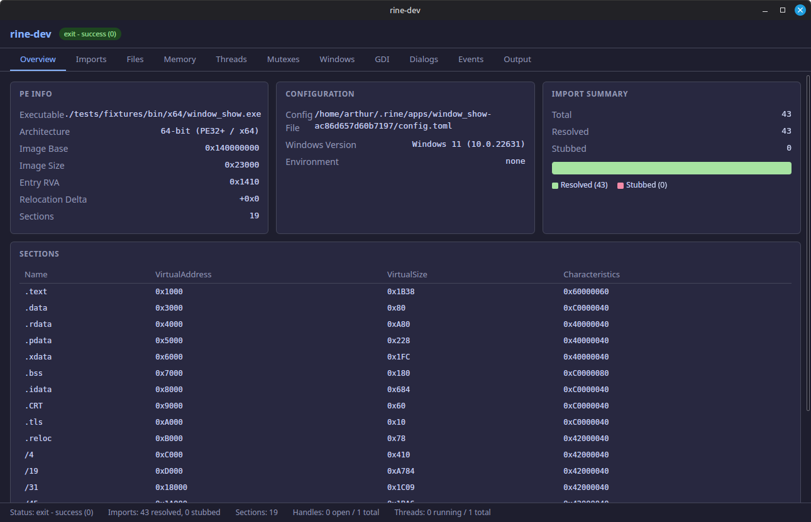
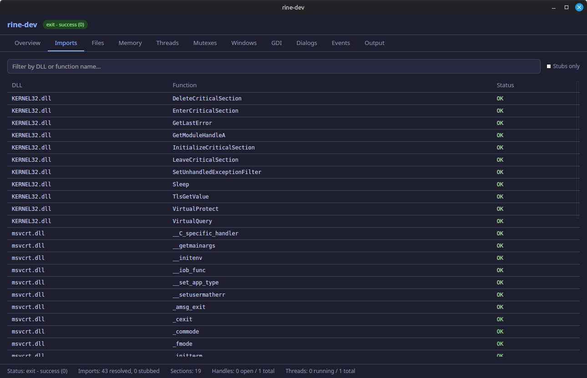
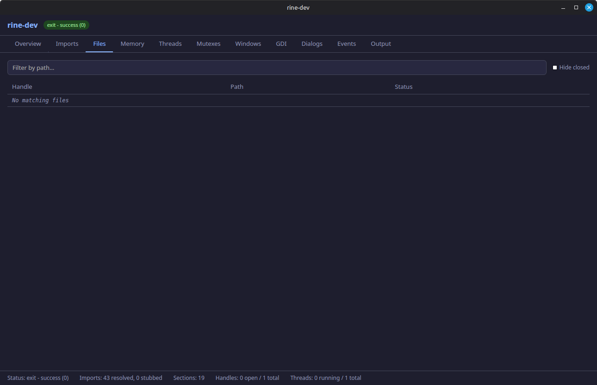
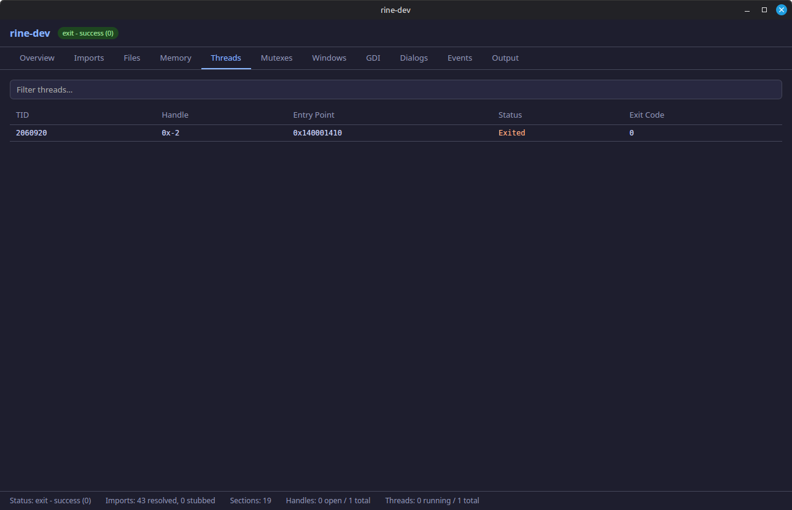
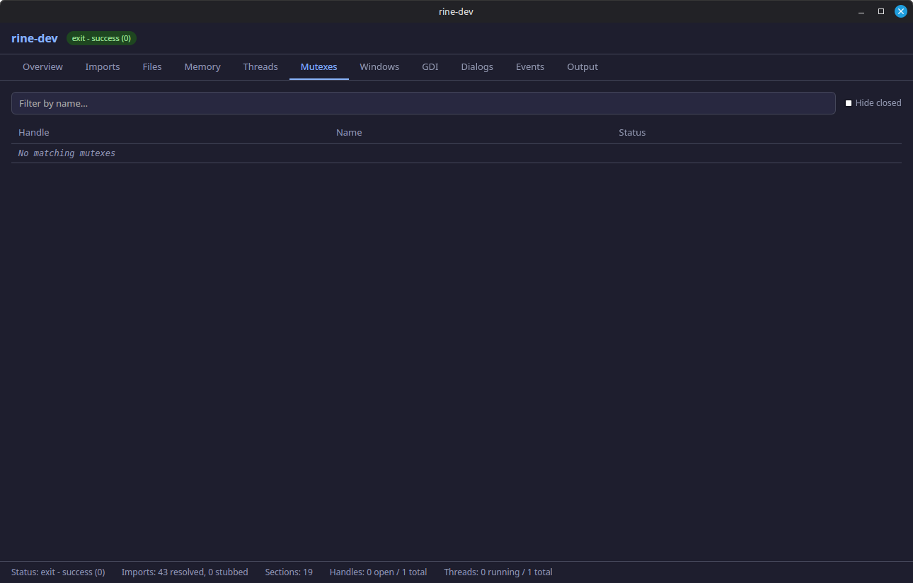
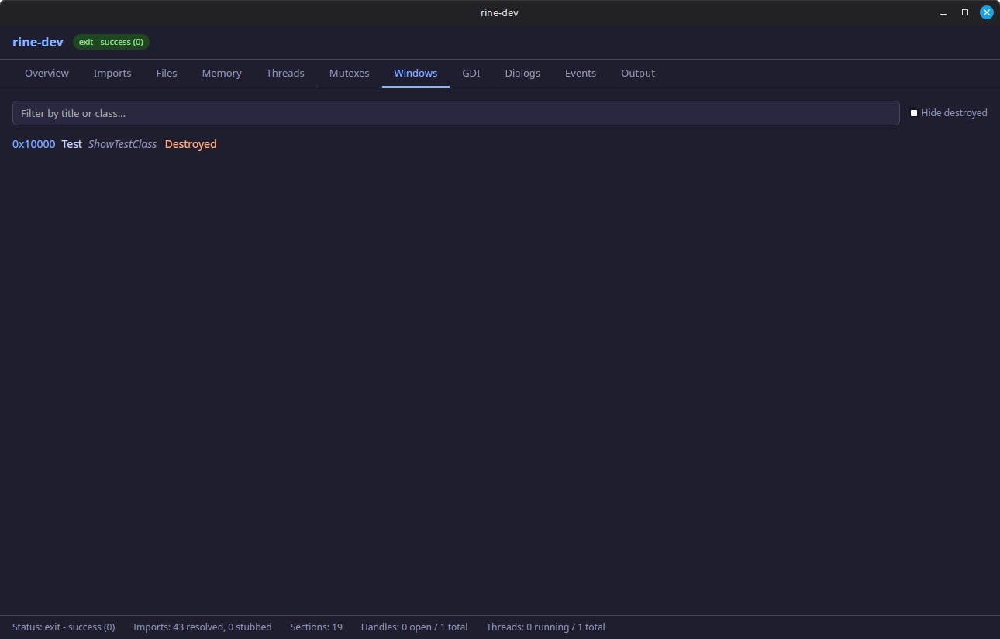
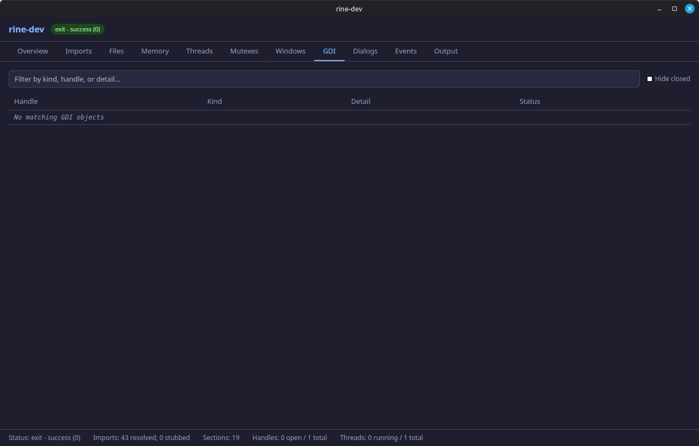
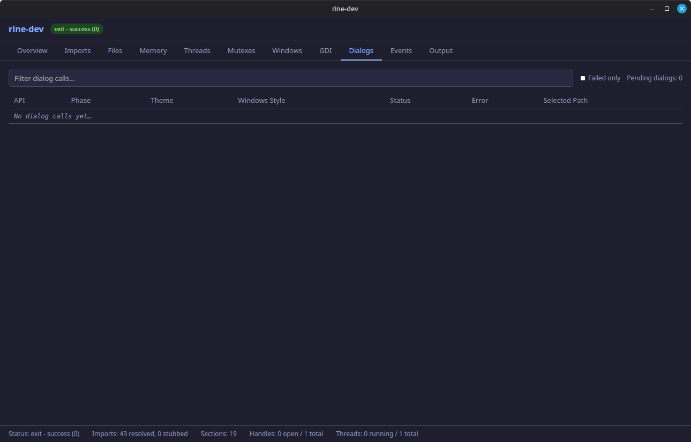
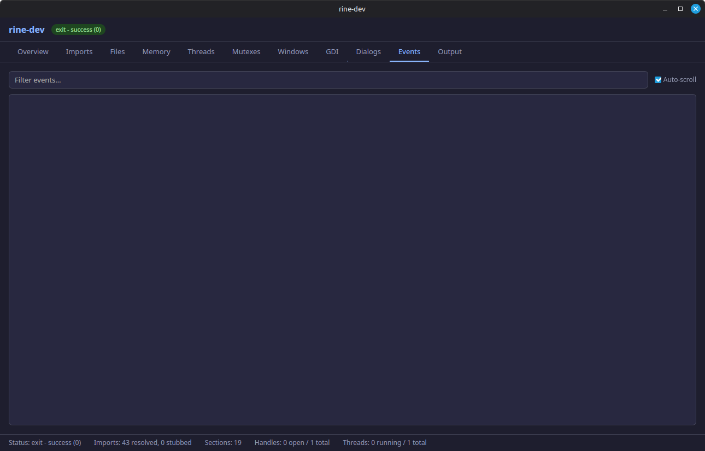

Overview
Landing snapshot of the running process, showing high-level runtime status and key metrics in one place.

rine-dev walkthrough
The rine-dev app gives you a live view into runtime internals so you can inspect imports, file and memory activity, thread and synchronization state, window and dialog behavior, graphics operations, event signaling, and process output while an application is running.
Landing snapshot of the running process, showing high-level runtime status and key metrics in one place.

Summarizes imported symbols and resolution behavior, helping confirm DLL binding and function availability.

Provides visibility into file handles and file operations performed by the loaded Windows binary.

High-level memory usage overview for quickly assessing allocation trends and overall runtime footprint.

Point-in-time detailed memory state used for deeper inspection of specific regions and allocations.

Lists thread activity to help diagnose scheduling behavior, contention, and app responsiveness issues.

Shows synchronization objects and lock state for debugging deadlocks, stalls, and ownership flow.

Tracks created windows and related metadata so UI lifecycle activity can be monitored as the app runs.

Surfaces graphics-device activity and GDI-related calls for tracing rendering and drawing behavior.

Captures dialog interactions and state so common dialog flows can be inspected and verified.

Displays event objects and signaling behavior, useful for understanding wakeups and wait patterns.

Captures normal program output and progress logs emitted to standard output during execution.

Surfaces warnings, errors, and diagnostic messages written to standard error.